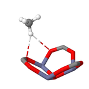

<div class="ui divided items">
    <div class="item">
        <div class="ui tiny image">
            
        </div>
        <div class="content">
            <a class="header" href="http://pubs.acs.org/doi/abs/10.1021/acs.jpcc.7b04246">
                Methane Storage: Molecular Mechanisms Underlying Room-Temperature adsorption in
                Zn<sub>4</sub>O(BDC)<sub>3</sub> (MOF-5)</a>
            <div class="meta">

            </div>
            <div class="description">
                <strong>E. Tsivion</strong> and M. Head-Gordon
            </div>
            <div class="extra">
                Accepted to The Journal of Physical Chemistry A
            </div>
        </div>
    </div>
    <div class="item">
        <div class="ui tiny image">
            
        </div>
        <div class="content" >
            <a class="header" href="https://gist.github.com/EhudTsivion/a414febe9d58f8964e51f2f66df0434b">
                Exploring the 2013 BRFSS dataset with R</a>
            <div class="meta">

            </div>
            <div class="description">
                Exploring something
            </div>
            <div class="extra">
                Early attempts to do something useful with R
            </div>
        </div>
    </div>
</div>
<script>
    ga('create', 'UA-84751922-1', 'auto');
    ga('send', 'pageview', 'data_projects');
</script>